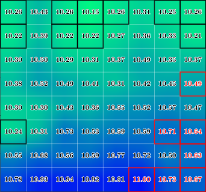
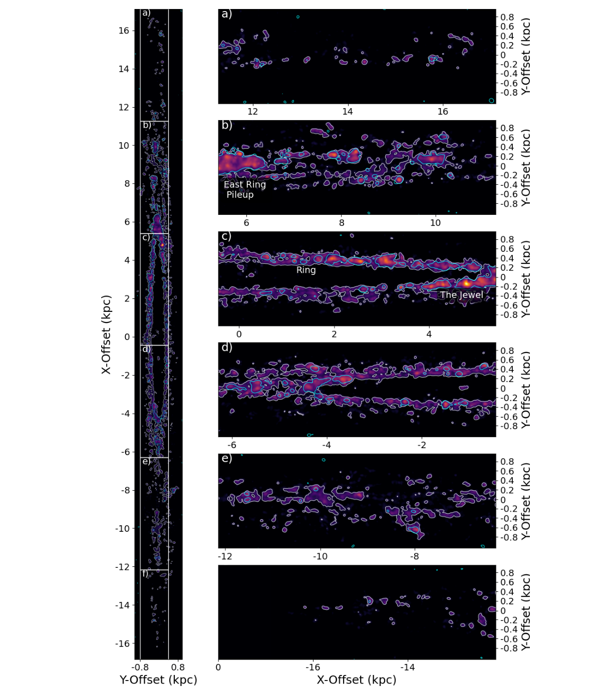
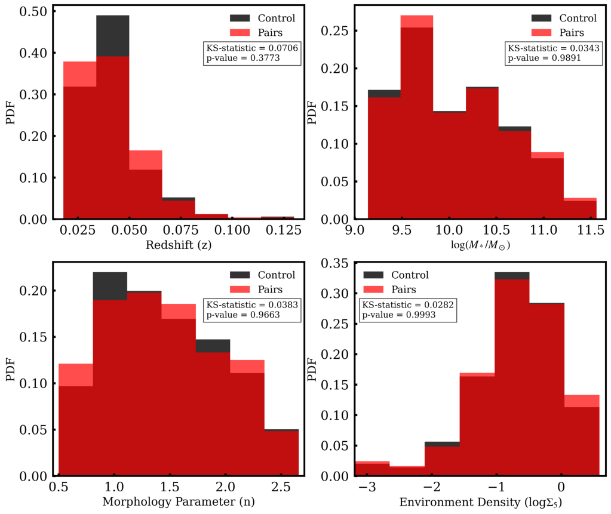
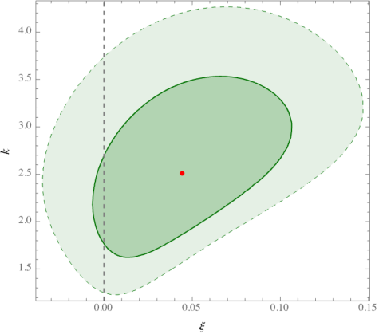
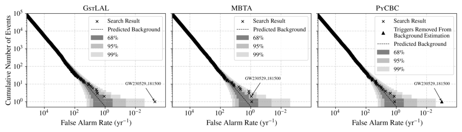
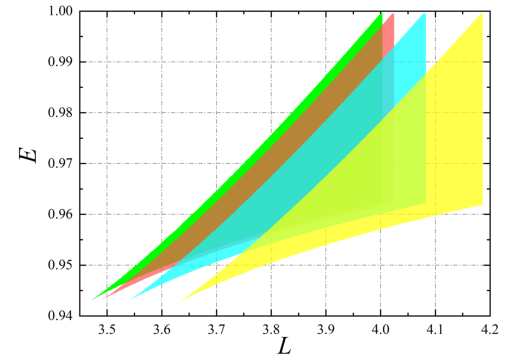
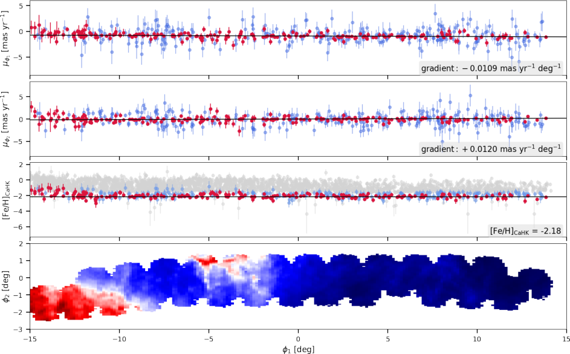
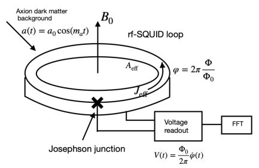

Galaxy Clusters
We perform Bayesian targeted searches for continuous gravitational waves from eccentric supermassive binary black holes (SMBBHs) using the Parkes Pulsar Timing Array third data release (PPTA DR3).…

We perform Bayesian targeted searches for continuous gravitational waves from eccentric supermassive binary black holes (SMBBHs) using the Parkes Pulsar Timing Array third data release (PPTA DR3).…

We present high-resolution (0.94" $\approx$ 55 pc) ALMA CO(2-1) and 13CO(2-1) observations of the highly inclined (i~87.5 deg) galaxy NGC 4565 covering out to galactocentric radius Rgal > $\pm$ 17 kpc.…

Using integral field spectroscopy from SDSS-IV MaNGA, we investigate the radial distributions of star formation rate (SFR) and gas-phase metallicity in spiral galaxies that reside in spiral-elliptical (S+E) pairs.…
Early observations from the James Webb Space Telescope (JWST) have revealed an overabundance of massive high-redshift galaxies, raising the question of whether this points to new physics beyond $Λ$CDM, or an enhanced formation efficiency of massive stars.…
Direct observational constraints on the earliest, stellar-wind-dominated phases of galactic outflows remain scarce. We present medium-resolution VLT/X-shooter spectroscopy of six Type I superluminous supernova (SLSN-I) host galaxies at z = 0.15-0.51, exploiting the bright SLSN continua as single, do…

In this paper, we study the gravitational lensing around the static and spherically symmetric DD black holes, which we recently derived as perturbations of the Schwarzschild geometry within the revised Deser-Woodard theory of nonlocal gravity.…

Star evolution models predict the lightest compact objects in the universe to have masses greater than that of the Sun. Nonetheless, alternative scenarios could lead to the formation of sub-solar mass (SSM) compact objects, such as primordial black holes (PBHs).…

Timelike orbits in curved spacetimes encode intrinsic information about the background geometry and serve as critical probes for investigating gravitational theories and source distributions.…

Stellar streams are dynamically fragile structures formed by the tidal disruption of dwarf galaxies and stellar clusters. These objects are valuable tracers of the gravitational potential and accretion history of the Milky Way, and are key probes for the presence and interactions of starless dark ma…

Quantum phase measurements offer a complementary route to axion searches. We show that axion-photon interactions can imprint both Aharonov-Bohm (AB) and Berry phases in experimentally motivated quantum setups.…